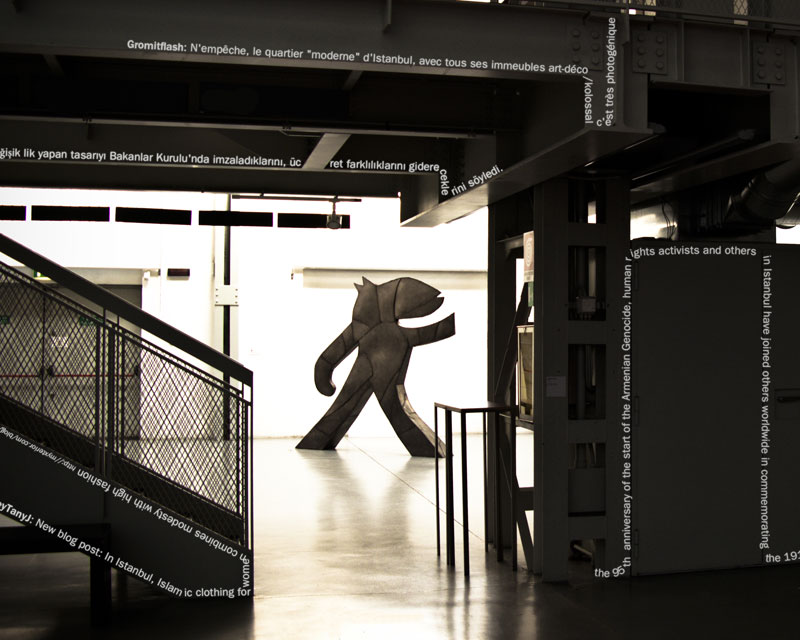
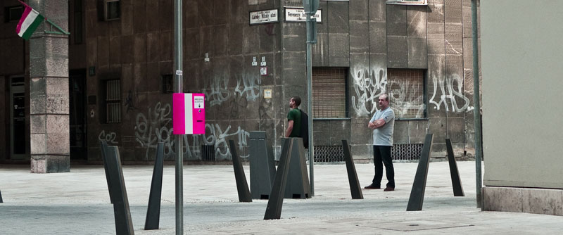
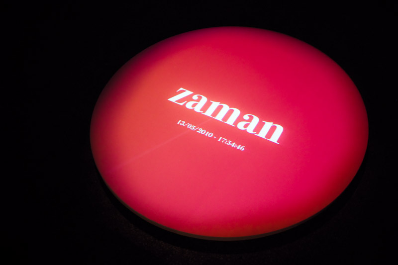
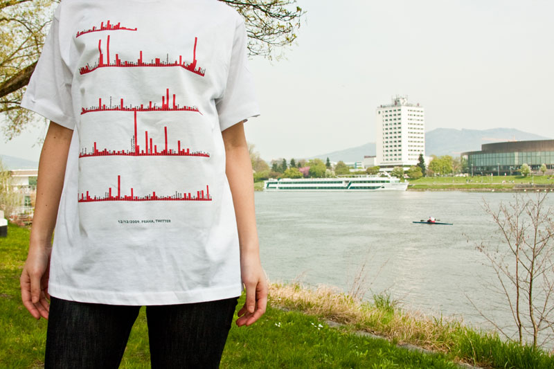

About Social Bits
Social Bits is an international research group based in Linz (Austria), New York (USA), Vancouver (Canada), Melbourne (Australia) and Tokyo (Japan) focusing on the artistic output of social interactions in real world locations; specifically in urban environments, public spaces and unique architectural complexes. Social interaction is a sustained presence in all societies throughout history; however, the methods of interaction have radically evolved in recent years, aided and augmented by both technological developments and the sense of comfort generated by these developments. Our research studies and analyzes the collective information cloud created by humans worldwide, as well as introducing new mediums, materials and platforms to present the artistic results we discover.
Social Bits is not solely interested in the social data itself. Rather, it is the means of producing the data, and how it can be reflected back on society that interests us. The process of turning a human thought into digital information, then in turn putting the information in a physical context is what is intriguing.
Social Bits Istanbul Exhibition
Cities are like nerve networks. They are as much formed of interactions among the cells (inhabitants) as they are about their physical nature and architecture. Life in cities is built on these interactions and it is an endless progression. The methods of interactions change, renew or evolve, but the underlying sociality endures. We create many bits of information during these chaotic interactions, information which is largely invisible to us. These bits can be seen as similar to the shadows of the people in the city. They cannot exist without the citizens; however, they are different from the people themselves. They contain some pieces of meta-information that is related to the citizens, interactions and city itself.
These meta-information clusters are clouds that cover the entire spectrum of the city, and they continually move, scale and transform. Today, we create the source information for these clouds on online platforms. We share our thoughts and experiences via social networks. This trackable information we create in virtual worlds merges into real life and becomes a part of our daily city life activities.
Social Bits aims to track the invisible information in shadows and explore the data clouds in the city. It researches on possible avenues of output and display for the information in the cityscape via media art. In “Social Bits İstanbul” exhibition, the inhabitants of the city and the visitors of the gallery will be a part of the cloud and contribute to the formation of the works.
Exhibition Projects
*click to show/hide each project
Collective Data Maps
Social Bits (INT)
Collective Data Maps is an open mapping project for exhibition visitors. There are two İstanbul city maps printed and prepared for collaboration within the gallery. With small cloud-shaped pins, visitors will take part in creating physical data maps of İstanbul that reflect the most liked and most disliked locations of İstanbul as told by its citizens.

Fluid Data
Jayme Cochrane (CA)

Fluid Data is a dynamic urban interface combining social data with architecture. The amount of location-specific content being posted online is impossible to keep track of, and this project intends to make that data visible. Real-time Twitter posts from İstanbul and İstanbul news articles will gently flow around the gallery, showing how much data about the city is constantly being created in real-time. Highlighting architectural elements, the data will follow paths in and out of a room, appearing in the space via the Internet, flowing along the architecture, then disappearing again, back into the social data sphere.

kazamidori
h.o (JP)
kazamidori is a media gadget like weather vane to indicate the direction of where visitors in a website are coming from in real-time. The weather vane is designed as a bird, like traditional weather vanes, as it will face the direction where the virtual ‘wind’ is coming from. Every day, visitors arrive at the website virtually and kazamidori aims to physically display where the interested audience is, on a worldwide level. In this exhibition, the system will be pointed towards the website of Sabancı University. As a result, visitors to the gallery can see the direction where Kasa Galeri is being followed in the world, while imagining the subtle feelings of the virtual visitors.

Newsleak
Tim Devine (AU), Jayme Cochrane (CA), Shervin Afshar (IR)

Newsleak is not an art project. It is a motivated functional hybrid of real and digital cultures and media. Press a button on a pink box in the urban environment to instantly receive a printed summary of the latest news from around the world, news from your current location, news of internet cultures, events, trends and social media.
Our aim is to cultivate a functional exchange between the real space and the virtual space. Think of Newsleak as you would any other print media publication: it has a target audience, a distinct style and type of content, and specific intervals and methods of distribution. Most publications are fundamentally focused on the target audience and the target audience is defined by the content and distribution.

Urban Mood
Mahir M. Yavuz (TR)

Urban Mood visualizes the real-time mood of the citizens of İstanbul. It is a projection and sound installation situated in a small room. The installation continuously collects the data from Tweeters in İstanbul, analyzing and summarizing each post in a single word. Through this keyword, the source tweets will create a typographic animation on the floor of the room, while colors and sounds will change to suit the content of the keyword. By sharing their personal thoughts on Twitter, every İstanbulian becomes a part of this mood production.
Urbansphere Wearables
Mahir M. Yavuz (TR)

Urbansphere Wearables aims to reflect the daily keywords of the city by utilizing the data streams of social networks as a source of fashion design. The project initiates “social sensors” (special filters and data gathering scripts that follows Twitter) in order to collect information on social networks created by different inhabitants of the same city. The data gathered is then visualized and turned into a pattern for wearables that represent the recent topics and discussions of urban people. In the exhibition, visitors will see a set of unique wearables that contains data from İstanbul.

Current members of Social Bits
Mahir M. Yavuz
Mahir M. Yavuz is a designer and researcher who lives and works in Linz, Austria. He is currently engaged in doctoral studies in Interface Culture at the University of Art and Design Linz. Besides giving lectures at the same university, he also works as a senior researcher of graphic design at the Ars Electronica Futurelab.
Jayme Cochrane
Jayme Cochrane is an interaction designer currently based in Linz. After receiving a B.Sc in Interactive Arts (focus Interaction Design) from Simon Fraser University in Canada, he moved to Linz to work in the Ars Electronica Futurelab. He is currently also pursuing a master's degree in Interface Culture at the University of Art and Design Linz.
h.o (Hide Ogawa, Taizo Zushi, Jun Yura, Emiko Ogawa, and Yoko Minagawa)
h.o is an international media art group from Tokyo creating conceptual art works using a mixture of media combined with digital technology. h.o derives from the chemical symbol for water, H2O, implying h.o's interest in various forms of communication between people. Its activities and ideas are inspired by little awareness that appear in everyday scenes and criticism on information-oriented society.
Timothy Devine
Timothy Devine followed artist residencies at Experimedia in Melbourne, Kitchen Budapest developing Newsleak and MediaLab Prado, Madrid where he developed The Mexican Standoff - Creating a Hyperreality. He presented papers at Technarte, Bilbao and Computer Space, Sofia. His work has been written about around the world, with interviews on national radio CBC Canada and radio Australia. He has been commissioned for interactive installations at the State Library of Victoria and Oxfam. He currently lives in Linz Austria following his Masters of Interface Cultures at the Kunstuniversität.
Shervin Afshar
After graduating as a software engineer, he started to work as an independent media artist in Tehran. In 2008, he joined Ars Electronica Futurelab as a creative engineer. Since 2009, he is a master student in Interface Cultures at the University of Arts and Design in Linz, Austria. His works have been presented in exhibitions in Iran, Germany (TypoBerlin), and United States (Digital Ritual). Current focus of his works is on the role of time-based and live online data and textual information as a base for creating new experiences using the digital media.